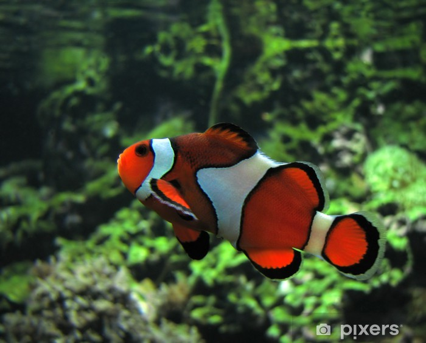

Palyaço balığı (Amphiprioninae), Hint-Pasifik okyanusunun mercan resiflerinde yaşayan tropikal deniz balığıdır. Turuncu gövdesi üzerindeki beyaz şeritleri ve siyah kenarlarıyla akvaryum hobisinin en tanınan türlerinden biridir. Özellikle deniz anemonlarıyla simbiyotik yaşamı sayesinde doğada eşsiz bir ekolojik ilişki kurar. Bu tür, 24–27°C sıcaklıkta, tuzlu ve temiz sularda sağlıklı şekilde yaşar. Akvaryum ortamında deniz anemonlarıyla birlikte beslendiğinde doğal davranışlarını sergiler. Palyaço balıkları küçük boyutlarına rağmen oldukça dayanıklı ve uyumlu canlılardır. Davranış açısından palyaço balıkları sosyal ve barışçıldır. Genellikle çift halinde veya küçük gruplar halinde yaşarlar. İlginç bir özelliği ise cinsiyet değişimidir: sürüde baskın birey dişi olur, diğerleri erkek olarak kalır; baskın dişi ölürse en güçlü erkek dişiye dönüşür. Beslenmeleri çeşitlidir: canlı yemler (karides, plankton), dondurulmuş yemler ve özel deniz balığı yemleriyle dengeli bir diyet uygulanabilir. Uygun koşullarda akvaryumda kolayca ürerler ve yumurtalarını genellikle düz yüzeylere bırakırlar.